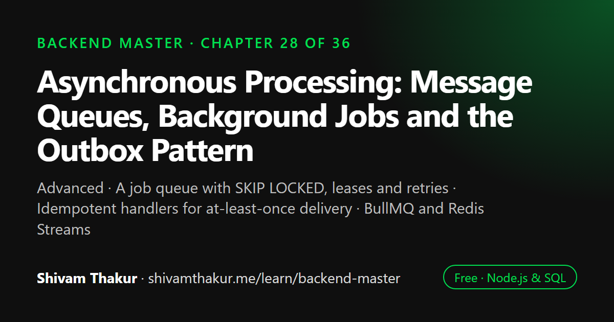

Chapter 28 of 36 · Advanced
Asynchronous Processing: Message Queues, Background Jobs and the Outbox Pattern
Asynchronous Processing — Queues, Workers and Events

Slow or flaky work should not run inside the HTTP request. This chapter builds a PostgreSQL job queue with leases and fenced completion, compares BullMQ and Redis Streams, tests crashes, poison jobs and duplicate delivery, shows the outbox pattern avoiding silent event loss, and covers backpressure and cron on several instances.
In this chapter you will learn
- A job queue with SKIP LOCKED, leases and retries
- Idempotent handlers for at-least-once delivery
- BullMQ and Redis Streams
- The transactional outbox pattern
- Backpressure and scheduled jobs across instances
28.0 Why This Chapter Matters
Look at what happens when a customer clicks "Place order":
- Save the order (10 ms).
- Charge the card (800 ms, an external API).
- Send a confirmation email (300 ms, another external API).
- Generate a PDF invoice (500 ms of CPU).
- Update the warehouse system (200 ms, flaky).
- Recompute the recommendation model, ping analytics, notify the seller…
If all of that happens inside the HTTP request, the customer waits two seconds, and any one slow or failing step ruins the whole request. If the email provider is down, the order fails, even though the order itself was fine.
The fix is one of the oldest ideas in software: do the essential work now, and put everything else on a queue for background workers. The request returns in milliseconds; the rest happens reliably, at its own pace, with retries.
But queues bring their own failure modes, which this chapter makes you see:
- A worker crashes mid-job. Is the job lost, or done twice?
- A job always fails. Does it retry forever and clog the queue?
- Two workers pick the same job. Does the customer get two invoices?
- Producers are faster than consumers. Does the queue grow until memory runs out?
- You write to the database and then publish an event, and the process dies in between. Is the event lost?
- Three servers all run the "nightly report" cron. Does it run three times?
We'll build a production-shaped queue on PostgreSQL (using the SKIP LOCKED pattern from Chapter 16), compare it with BullMQ on Redis and Redis Streams (Chapter 19), and test every failure above.
28.1 The Vocabulary
┌─────────────┐ enqueue ┌─────────────────┐ claim ┌──────────────┐
HTTP request ─► Producer ├─────────────►│ QUEUE / BROKER ├────────────►│ Consumer(s) │
(returns fast)│ (your API) │ │ (durable storage)│ ack / nack │ (workers) │
└─────────────┘ └─────────────────┘◄────────────┴──────────────┘| Term | Meaning |
|---|---|
| Producer | Code that creates a job/message (the API handler) |
| Queue / broker | Durable storage that holds jobs until processed (PostgreSQL, Redis, RabbitMQ, SQS, Kafka) |
| Worker / consumer | A separate process that claims and executes jobs |
| Job vs message | A job is "do this work" (a command); a message/event is "this happened" (a fact) |
| Ack / nack | Consumer tells the broker "done" / "failed, retry" |
| Visibility timeout / lease | A claimed job is hidden from others for a while; if not acked in time, it reappears |
| Dead-letter queue (DLQ) | Where jobs go after too many failures, for humans to inspect |
| Delivery semantics | At-most-once (may lose), at-least-once (may duplicate), exactly-once (a myth; see §28.6) |
| Idempotent consumer | Processing the same job twice has the same effect as once |
| Backpressure | Slowing/rejecting producers when consumers can't keep up |
What belongs in a queue?
| Put in a queue | Keep in the request |
|---|---|
| Sending email/SMS/push | Validating input |
| Generating PDFs, reports, thumbnails | Writing the order to the database (the essential state change) |
| Calling slow or flaky third-party APIs | Anything the user must see the result of immediately |
| Webhook delivery (with retries) | Authorisation checks |
| Search index updates, cache warming, analytics | |
| Bulk imports/exports, nightly jobs |
Rule of thumb: if the user doesn't need the result to continue, and it can fail and be retried independently, queue it.
28.2 A Job Queue in PostgreSQL
You do not need new infrastructure to start. A table plus FOR UPDATE SKIP LOCKED (Chapter 16) is a correct, transactional queue, with the enormous advantage that enqueueing can happen inside the same transaction as your business write (§28.5). Our schema (pgqueue.mjs):
CREATE TABLE jobs (
id bigint GENERATED ALWAYS AS IDENTITY PRIMARY KEY, queue text NOT NULL, payload jsonb NOT NULL,
status text NOT NULL DEFAULT 'queued' CHECK (status IN ('queued','running','done','dead')),
attempts int NOT NULL DEFAULT 0, max_attempts int NOT NULL DEFAULT 5,
run_at timestamptz NOT NULL DEFAULT now(), -- when it becomes eligible (delays and backoff)
locked_by text, locked_until timestamptz, -- the lease
last_error text, created_at timestamptz NOT NULL DEFAULT now(), finished_at timestamptz);
CREATE INDEX jobs_ready_idx ON jobs (queue, run_at) WHERE status IN ('queued','running'); -- partial index (Ch 15)Claiming work safely
UPDATE jobs SET status = 'running', locked_by = $worker,
locked_until = now() + ($lease || ' milliseconds')::interval, attempts = attempts + 1
WHERE id IN (
SELECT id FROM jobs WHERE queue = $q
AND ((status = 'queued' AND run_at <= now())
OR (status = 'running' AND locked_until < now())) -- a crashed/slow worker's expired lease
ORDER BY run_at, id LIMIT $n FOR UPDATE SKIP LOCKED) -- workers never block each other
RETURNING *;Completion is fenced: only the current lease holder may finish the job.
UPDATE jobs SET status = 'done', finished_at = now() WHERE id = $1 AND locked_by = $worker AND status = 'running';
-- rows updated = 0 → I lost my lease; someone else owns this job nowExperiment 1: throughput and "exactly one claim"
600 jobs, each simulating 10 ms of work, with 1 worker versus 4:
1 worker(s): 22.5 s = 27 jobs/s | effects 600 (duplicates: 0) | split w1:600
4 worker(s): 5.4 s = 111 jobs/s | effects 600 (duplicates: 0) | split w1:151 w2:150 w3:149 w4:150Four workers gave 4.1× the throughput, divided the jobs almost perfectly evenly, and processed every job exactly once (zero duplicate effects), because SKIP LOCKED guarantees no two workers claim the same row. (Absolute rates are low because every job costs several database round trips through Docker; the scaling is the point. Adding workers is how queues scale.)
Experiment 2: a worker crashes mid-job
w-crash claimed job 1 (attempt 1, lease 800 ms) then died.
immediately: w-live can claim? NO (lease still held)
after the lease expired: w-live claimed job 1 (attempt 2, locked_by w-live)
the zombie w-crash wakes up and tries to mark it done -> rows updated: 0 (fenced: only the current lease holder may finish)The dead worker never acknowledged, so the job's lease expired and another worker took it over (attempts = 2): no job is lost when a worker dies. And if the "dead" worker was merely slow and wakes up later, its completion is rejected by the fencing condition. This is the same pattern as SQS's visibility timeout and Redis Streams' pending list.
Experiment 3: a poison job, retries and the dead state
A job that always fails (SMTP 550 mailbox does not exist), max_attempts = 4, exponential backoff with jitter (Chapter 26):
attempt 1: retry (next try in 104 ms) at +27 ms
attempt 2: retry (next try in 236 ms) at +144 ms
attempt 3: retry (next try in 750 ms) at +412 ms
attempt 4: dead at +1171 ms (the printed "next try" delay on the last line is not used)
final row: {"status":"dead","attempts":4,"last_error":"SMTP 550 mailbox does not exist"}Retries spread out in time rather than hammering the failing dependency, and after the last attempt the job moves to dead: out of the way, with its error recorded, waiting for a human (and an alert on "dead jobs > 0", Chapter 25). Without a cap, a poison job retries forever and, in a simple FIFO queue, can block everything behind it. Always set max_attempts, backoff, and a dead-letter state. Distinguish retryable failures (timeouts, 5xx) from permanent ones (invalid address): permanent failures should go straight to dead without burning retries.
Experiment 4: at-least-once means possibly twice
The most important experiment. Worker w1 is slow (1.5 s, as in a GC pause or a slow API) but the lease is only 1 s. The job's lease expires, w2 claims it and finishes in 100 ms, then w1 wakes up and finishes too. The side effect: "send the invoice email".
naive handler lease 1 s, w1 takes 1.5 s | events: w2:done, w1:lost-lease | invoice emails sent: 2 <- DUPLICATE
idempotent handler (effects table) lease 1 s, w1 takes 1.5 s | events: w2:done, w1:lost-lease | invoice emails sent: 1The queue did exactly what it promised (at-least-once): the job was delivered twice. The fencing check stopped w1 from marking it done (lost-lease), but it could not stop w1 from performing the side effect before noticing. The fix belongs in the handler: record "this effect happened" under a unique key and skip if it already did:
const r = await db.query('INSERT INTO effects (job_key) VALUES ($1) ON CONFLICT DO NOTHING', [`invoice-${order}`]);
if (r.rowCount === 0) return; // someone already did it
await sendInvoiceEmail(order); // (ideally pass an idempotency key to the provider, too: Chapters 16, 26)With that in place, the duplicate delivery was harmless (1 email). (A subtle gap: if the process dies between INSERT and the send, the effect is recorded but never performed. For truly critical side effects use a provider-side idempotency key, or write the effect and the record in one transaction when the effect is a database write.)
28.3 BullMQ: A Redis-Backed Queue Library
Writing a queue is educational; in production, use a library unless you have a reason not to. BullMQ is the standard Redis-based queue for Node: jobs, workers, retries, delays, priorities, rate limits, repeatable jobs, and a UI ecosystem. (It uses ioredis; install it alongside: a gotcha I hit, since the error message appears only when you construct the first Queue.)
const queue = new Queue('emails', { connection });
await queue.add('flaky', {}, { attempts: 4, backoff: { type: 'exponential', delay: 100 } });
await queue.add('delayed', { n: 1 }, { delay: 800 });
new Worker('emails', async (job) => { /* throw to retry */ }, { connection, concurrency: 3, limiter: { max: 10, duration: 1000 } });Tested results:
flaky job result: ok after 3 attempts | handler calls: 3
flaky failed (attempt 1/4): 503 from provider
flaky failed (attempt 2/4): 503 from provider (then succeeded on attempt 3, with 100 ms then 200 ms backoff)
poison failed (attempt 1/3) … (attempt 3/3): always fails
poison job ends in the failed set (BullMQ's dead-letter equivalent): poison(attempts 3)
delayed job (800 ms) ran at: +1042 ms- Retries with backoff worked as configured; the permanently failing job ended in the
failedset after its 3 attempts. - Delayed jobs (
delay: 800) ran after the delay (+1042 ms here, including the time to reach the worker through a busy test). - Priority: my first test looked wrong (
low -> high) because I enqueued the jobs one at a time while an idle worker was waiting: the low-priority job was taken the instant it arrived. Priority only matters when jobs are waiting together. Re-run correctly: enqueuedlow, normal, high→ processedhigh -> normal -> low. - Rate limiting: 40 jobs enqueued at once, limiter 10/second:
jobs finished per second: 10, 10, 10, 10, 0 (total 40 in 3.2 s) <- capped by the limiter, protecting a downstream APIThis is how you respect a third party's rate limit (an email provider allowing 10 sends/second) without writing throttling code.
- Scheduled/repeatable jobs: with two workers and a scheduler firing every 300 ms for ~2 s, we saw 7 ticks in total (not 14): the schedule lives in Redis, so it fires once per interval no matter how many instances run (one instance handled most ticks; either may).
Redis Streams (Chapter 19) and crashed consumers
Redis Streams give you a durable log with consumer groups. The crash-recovery mechanism is XAUTOCLAIM:
worker-A read invoice-1, invoice-2 ... and crashed without XACK
pending list: 2 message(s) owned by a dead consumer
worker-B reads NEW messages only: invoice-3 (the two held by A are invisible to it)
after 500 ms idle, worker-B XAUTOCLAIMed: invoice-1, invoice-2
delivery counts now: both messages at delivery count 2 (> 1 means redelivered; use it to dead-letter after N tries)
pending after ack: 0Messages a dead consumer held are invisible to other workers until they've been idle long enough to be claimed, and their delivery counter tells you how many times they've been tried. Same lease idea, different spelling.
Choosing a queue technology
| PostgreSQL table | Redis (BullMQ / Streams) | RabbitMQ | SQS (+SNS) | Kafka / Redpanda | |
|---|---|---|---|---|---|
| Enqueue in the same transaction as business data | Yes | No | No | No | No |
| Setup / ops | None (already have it) | A Redis you already run | Broker to run | Managed | Heavy |
| Throughput | Hundreds–low thousands/s | Tens of thousands/s | Tens of thousands/s | Very high | Millions/s |
| Delays, retries, priorities, rate limits | Build it | Built in (BullMQ) | Plugins/DLX | Delay + DLQ | Build it |
| Replay old messages | If you keep rows | Streams: yes | No | No | Yes (core feature) |
| Durability | PostgreSQL's | Depends on AOF/persistence (Ch 19) | Good | Excellent | Excellent |
| Best for | Starting out; transactional enqueue | General background jobs | Complex routing | AWS-native, zero-ops | Event streaming, replay, huge scale |
(RabbitMQ, SQS and Kafka columns are from documentation; I did not run them.) Start with what you have (a PostgreSQL table or BullMQ on the Redis you already run); move to a dedicated broker when you've measured a limit (Chapter 20's rule).
28.4 Workers in Practice
Running workers
- A separate process (or container) from the web server, same codebase, different entry point (
node worker.js). That way a slow job can't affect request latency, and you can scale each independently (10 web instances, 3 workers). - Concurrency: BullMQ's
concurrencyand the number of worker processes. CPU-bound jobs need worker processes/threads; I/O-bound jobs can run many concurrently in one process (Chapter 5). - Graceful shutdown (Chapter 25): on
SIGTERM, stop claiming new jobs, finish the current ones (or let leases expire), close connections, exit. Set the lease/visibility timeout longer than the typical job and extend it (heartbeat) for long jobs, or you'll cause the duplicate in Experiment 4. - Timeouts per job (Chapter 26): a hung job holds a worker slot forever.
- Isolate queues by importance (a
criticalqueue for payments and abulkqueue for reports) with separate workers: a bulkhead (Chapter 26) so a flood of low-priority work can't starve critical work.
Job design rules
- Small payloads: pass ids, not data.
{ orderId: 77 }, not the whole order: the data may change, and queues are poor databases. The worker loads current state. - Idempotent handlers, always (§28.2, Experiment 4).
- Deterministic job ids / dedup keys for work that shouldn't be queued twice (
invoice-77). - Version your job payloads (
{ v: 2, … }) so old queued jobs survive a deploy that changes the handler. - Make handlers small and resumable. For multi-step work, queue each step (or use a workflow engine) so a failure repeats one step, not everything.
- Observe: queue depth, age of the oldest job, processing time, retry and dead counts, worker liveness (Chapter 25). Queue depth alone is misleading; age of oldest job is the real health signal.
28.5 The Outbox Pattern: Never Lose an Event
The most common queue bug in real systems is the dual write: change the database, then publish a message.
await db.insertOrder(order); // ✔ committed
await broker.publish('order.created', order); // ✘ the process crashes / the broker is down → the event is lost foreverThere is no transaction spanning PostgreSQL and the broker, so a crash between the two leaves the system permanently inconsistent: an order exists that no email, warehouse or analytics ever hears about. We simulated "20% of requests crash between the two steps" over 300 orders:
naive dual write : 60 of 300 orders committed but NEVER announced (no email, no inventory event) -> silent data loss(No error is thrown anywhere; the crashes simply happened after the commit. Silent loss is the worst kind.)
The fix: write the event in the same transaction
await db.query('BEGIN');
const { rows: [o] } = await db.query('INSERT INTO orders (...) VALUES (...) RETURNING id');
await db.query(`INSERT INTO outbox (topic, payload) VALUES ('order.created', $1)`, [{ orderId: o.id }]); // ← atomic with the order
await db.query('COMMIT'); // both exist, or neither doesA separate relay process reads unpublished outbox rows and publishes them (using the same SKIP LOCKED claim), then marks them published:
outbox + relay : orders 300 | unpublished 0 | messages delivered 400 for 300 distinct orders (100 duplicates caused by 2 relay crashes after publishing)
idempotent consumer: emails actually sent 300 for 300 orders (duplicates absorbed by the processed table)Nothing was lost: all 300 orders were announced. But note the 100 duplicates: the relay crashed twice after publishing a batch and before marking it, so those batches were published again. (I crashed the relay deliberately on two batches so this would show; real crashes are rarer but inevitable.) That's at-least-once again, and the cure is the same: an idempotent consumer with a processed(message_id) table (INSERT … ON CONFLICT DO NOTHING; act only if a row was inserted) made the final effect exactly one email per order.
the pattern in one sentence: atomic write (state + outbox) → at-least-once relay → idempotent consumer = effectively-onceVariations: poll the outbox (simple, a little latency), or use change data capture (e.g., Debezium reading PostgreSQL's WAL) to stream the outbox table with no polling (not run). Clean up published rows periodically (partition or delete old ones).
28.6 Delivery Guarantees and the "Exactly Once" Myth
| Guarantee | How | Failure |
|---|---|---|
| At-most-once | Ack before processing | A crash during processing loses the job |
| At-least-once | Ack after processing; redeliver on timeout | A crash/slow worker causes duplicates |
| Exactly-once delivery | Impossible in general over an unreliable network: if an ack is lost, the sender can't know whether the receiver processed the message | n/a |
| Effectively-once | At-least-once delivery + idempotent processing | What real systems achieve |
Vendors advertise "exactly-once", but it always means within a closed system (e.g., Kafka transactions between Kafka topics) or at-least-once plus deduplication. The moment a side effect leaves the system (an email, a card charge, a webhook), you need idempotency. Design every consumer as if every message will arrive twice, because eventually it will.
Ordering
- A single queue with one worker preserves order; more workers or retries break it (job 2 can finish before job 1's retry).
- If order matters per entity (events for order 77 must apply in sequence), partition by key: route all events with the same key to the same worker/partition (Kafka partitions, BullMQ groups, or consistent routing), and make handlers tolerate out-of-order arrival using version numbers (apply only if
event.version > row.version). - Don't rely on global ordering; it's costly and fragile.
28.7 Backpressure: When Producers Outrun Consumers
Queues absorb bursts, but if producers consistently outpace consumers, the queue grows without bound: memory/disk fill, and every job waits longer and longer. We simulated a producer at 200 jobs/s and a consumer at 50 jobs/s for 4 seconds:
unbounded queue queue depth after 1/2/3/4 s: 79, 147, 201, 274 | rejected (429/503) 0 | median wait of served jobs 1426 ms, p99 2749 ms
bounded (max depth 100) queue depth after 1/2/3/4 s: 50, 100, 100, 100 | rejected (429/503) 139 | median wait of served jobs 1197 ms, p99 2567 msThe unbounded queue's depth climbed steadily (274 and growing) and wait times grew with it. With a bounded queue, depth stopped at 100 and 139 requests were rejected immediately (429/503 with Retry-After) instead of being accepted into a line they'd wait ages in. (In this short run the served jobs' waits were similar; the bounded queue's real benefit is a cap: wait time can't exceed depth ÷ consumer rate = 2 s, while the unbounded queue's wait keeps growing for as long as the overload lasts.)
Strategies: scale consumers; bound the queue and shed load (reject new work or drop the least important); rate-limit producers; make the work cheaper; prioritise; and alert on the age of the oldest job, which is the number users feel. Rejecting fast is kind: a client told "busy, retry in 30 s" can plan; one whose job silently ages for an hour cannot.
28.8 Scheduled Jobs (Cron) Without Duplicates
"Send the daily report at 02:00." On one server, node-cron is fine. On three instances, all three fire:
naive runs per tick (5 ticks, 3 instances): 3, 3, 3, 3, 3 -> total 15
claimed runs per tick (5 ticks, 3 instances): 1, 1, 1, 1, 1 -> total 5Three reports, three emails, three charges. The fix is to make firing a claim that exactly one instance wins: an atomic conditional update on a schedule row (UPDATE schedule SET last_tick = $1 WHERE name = 'daily-report' AND last_tick < $1: only one instance sees rowCount = 1), a PostgreSQL advisory lock (Chapters 14/16), or a scheduler whose state lives in shared storage (BullMQ's job schedulers, as tested in §28.3: one tick per interval across workers). Alternatives: one dedicated scheduler process, or the platform's scheduler (Kubernetes CronJob, AWS EventBridge, a managed cron) that enqueues a job once (not run here). Also: make the job itself idempotent (re-running yesterday's report must be safe), record each run, and use UTC with a plan for daylight-saving transitions.
28.9 Do the Work Later: Inline vs Queued
Back to the opening scenario. 200 orders, 20 concurrent clients, a 300 ms "send email" step:
inline (await sendEmail) request latency p50 335 ms p99 849 ms | 200 orders took 3.8 s
enqueue (outbox row, same tx) request latency p50 158 ms p99 243 ms | 200 orders took 1.6 sMoving the email out of the request cut p50 by 2.1× and p99 by 3.5×, finished the batch 2.4× sooner, and, the bigger win, removed the email provider from the request's failure path entirely: the order succeeds even if email is down for an hour; the queue holds the job and retries. (The 158 ms queued figure is mostly this laptop's database round trips; the difference is the lesson.)
The trade-offs: the user sees "order placed; confirmation email on its way" rather than a synchronous result; you need worker infrastructure, monitoring, and idempotent handlers; and debugging crosses a process boundary (propagate the request/trace id into the job, Chapter 25).
28.10 Event-Driven Design
When several parts of the system react to the same fact ("an order was placed"), publishing an event decouples them: the order service doesn't know who listens.
| Command (job) | Event | |
|---|---|---|
| Meaning | "Do X" (SendInvoice(order 77)) |
"X happened" (OrderPlaced(order 77)) |
| Naming | Imperative | Past tense |
| Recipients | One handler (the sender expects it done) | Zero to many (the sender doesn't care) |
| Coupling | Sender knows the receiver | Publisher knows no one |
- Domain events (inside one service/module, Chapter 11): in-process, often via an event emitter; fine for decoupling code, but not durable: a crash loses them. Persist critical ones with the outbox.
- Integration events (between services/modules): durable messages (queue/stream/topic) with a versioned, documented schema (treat it like a public API, Chapter 8: add fields, don't break consumers).
- Event payloads: include an event id (for deduplication), a timestamp, the entity id and version, and enough data for consumers to act or just the id so they fetch current state (trade-off: fat events couple schemas; thin events cause extra reads).
- Sagas: multi-step business transactions across services (reserve stock → charge card → create shipment) with compensating actions (release stock, refund) when a later step fails. Two styles: choreography (services react to each other's events; decentralised but hard to follow) and orchestration (a coordinator drives the steps; clearer, but a central component). Workflow engines (Temporal, AWS Step Functions) provide durable orchestration (not run here; we return to this in Chapters 30 and 33).
- Event sourcing (store the sequence of events as the source of truth) and CQRS (separate read and write models) are powerful and heavy; adopt only with a clear need and experienced team.
28.11 ShopLine's Async Architecture
POST /orders ──► [ tx: orders + order_items + outbox('order.created') ] ──► 201 in ~tens of ms
│
relay (SKIP LOCKED, polls outbox)
▼
BullMQ queues (Redis) ─ critical: payments-webhook, stock-sync
│ ─ default: email, invoice-pdf, search-index
▼ ─ bulk: reports, exports (rate-limited)
worker processes (separate deployment)
(idempotent handlers + processed-message table; dead jobs alert)
cron-like: BullMQ job schedulers (one tick per interval across instances)Rules of this design: business state and outbox row in one transaction; idempotent consumers keyed by event id; retries with jittered backoff and a dead-letter state; separate queues per criticality; queue age and dead-letter alerts; trace ids propagated into jobs; graceful worker shutdown; and a runbook for replaying dead jobs.
28.12 Edge Cases and Gotchas Checklist
- Slow/flaky work performed inside the request; user-visible failures from non-essential steps.
- Dual write (DB then broker) with no outbox: silent event loss on crashes.
- Non-idempotent handlers; assuming exactly-once delivery; no dedup key for side effects.
- Lease/visibility timeout shorter than the job (duplicate execution); no heartbeat for long jobs.
- No fencing: a zombie worker completes or overwrites after losing the lease.
- Unlimited retries, fixed (non-backoff) retries, retrying permanent errors; no dead-letter state or alert.
- A single queue for everything (bulk work starves critical work).
- Large payloads or secrets in jobs; unversioned payload schemas.
- Unbounded queues; no backpressure; alerting on depth instead of age of oldest job.
- Assuming order across workers/retries; no per-key partitioning or version checks.
- Cron on every instance; non-idempotent scheduled jobs; timezone/DST surprises.
- Workers killed mid-job on deploy (no graceful shutdown); workers sharing the web process.
- No trace/request id propagation into jobs; no queue observability.
- Outbox table never cleaned; BullMQ without
removeOnCompletelimits (Redis memory growth). - Using a heavyweight broker before a PostgreSQL table or BullMQ was proven insufficient.
28.13 Chapter Summary
- Queue the non-essential, keep the essential transactional write in the request. Inline email made p50 335 ms / p99 849 ms; queued: 158 / 243 ms, and the email provider left the failure path.
- A correct PostgreSQL queue is
FOR UPDATE SKIP LOCKED+ leases + fenced completion + backoff + dead state. Measured: 4 workers = 4.1× throughput with 0 duplicates; a crashed worker's job was recovered after the lease expired and the zombie's late completion was rejected; a poison job retried with exponential backoff then wentdead. - At-least-once means possibly twice: a slow worker outliving its lease sent 2 emails; an idempotent handler (unique effect key) sent 1. Leases, fences, keys.
- BullMQ gives retries/backoff, delays, priority (only among waiting jobs), rate limiting (10/s measured), and schedulers that fire once per interval across instances; Redis Streams recover a dead consumer's messages with
XAUTOCLAIMand a delivery counter. - Outbox pattern: naive dual write lost 60 of 300 events silently; writing the event in the same transaction lost none, with duplicates (100) after relay crashes that an idempotent consumer absorbed (300 emails for 300 orders).
- Exactly-once is a myth; build effectively-once (at-least-once + idempotency). Per-key ordering needs partitioning and version checks.
- Backpressure: an unbounded queue grew (depth 79 → 274); a bounded queue capped at 100 and rejected 139 requests fast. Alert on age of oldest job.
- Cron on 3 instances ran 15 times unless firing is a claim (5 runs). Events vs commands; sagas for multi-service flows.
28.14 Revision Notes
- Claim:
FOR UPDATE SKIP LOCKED; leaselocked_until; fencedUPDATE … WHERE locked_by = me. - Retries: exponential backoff + jitter,
max_attempts, dead/DLQ, retryable vs permanent errors. - At-least-once ⇒ idempotent handlers (unique key / processed table / provider idempotency key).
- Outbox: state + outbox row in ONE transaction; relay with SKIP LOCKED; consumers dedupe by event id.
- BullMQ:
attempts/backoff,delay,priority,limiter, job schedulers; installioredis. - Streams:
XREADGROUP,XACK,XAUTOCLAIM, delivery counter. - Backpressure: bound queues, reject with 429/503, scale consumers, alert on oldest-job age.
- Cron: claim the tick (conditional UPDATE / advisory lock / shared scheduler).
- Pass ids not blobs; version payloads; separate queues by criticality; graceful shutdown; heartbeat long jobs.
28.15 Mind Map (ASCII)
ASYNC PROCESSING
│
┌─────────────┬──────────────┬┴────────────┬─────────────┬───────────────┐
WHAT TO QUEUE BROKERS RELIABILITY OUTBOX SCALE/CONTROL EVENTS
│ │ │ │ │ │
email, PDF Postgres leases dual-write workers ×N commands vs events
3rd-party BullMQ/Redis fencing problem backpressure sagas
webhooks Streams retries relay rate limits schema versions
reports Rabbit/SQS/ backoff idempotent cron claims ordering by key
Kafka* DLQ consumer oldest-job age exactly-once myth28.16 Cheat Sheet
-- claim
UPDATE jobs SET status='running', locked_by=$w, locked_until=now()+interval '30 s', attempts=attempts+1
WHERE id IN (SELECT id FROM jobs WHERE queue=$q AND ((status='queued' AND run_at<=now()) OR (status='running' AND locked_until<now()))
ORDER BY run_at,id LIMIT 1 FOR UPDATE SKIP LOCKED) RETURNING *;
-- finish (fenced) UPDATE jobs SET status='done' WHERE id=$1 AND locked_by=$w AND status='running';
-- idempotent effect INSERT INTO effects(key) VALUES($1) ON CONFLICT DO NOTHING; -- act only if rowCount = 1
-- outbox BEGIN; INSERT business row; INSERT INTO outbox(...); COMMIT;await queue.add('email', { orderId }, { attempts: 5, backoff: { type: 'exponential', delay: 1000 }, removeOnComplete: 1000, removeOnFail: 5000 });
new Worker('email', handler, { connection, concurrency: 5, limiter: { max: 10, duration: 1000 } });
await queue.upsertJobScheduler('nightly-report', { pattern: '0 2 * * *' }, { name: 'report' });28.17 Key Takeaways
- Do the essential write now; queue the rest. Keep third-party failures out of your request path.
- Delivery is at-least-once, so every handler must be idempotent. Leases recover crashes; fences stop zombies; keys absorb duplicates.
- Use the outbox: never write the database and publish in two separate steps.
- Retries need backoff, caps and a dead-letter state, and an alert when jobs die.
- Bound queues and watch the age of the oldest job; rejecting fast beats waiting forever.
- Cron on many instances means claiming the tick.
28.18 20 Multiple Choice Questions
Tap an answer to check it. Your score updates as you go.
Score: 0 / 0 answered (20 questions)
Why queue an email instead of sending it in the request?
FOR UPDATE SKIP LOCKEDlets multiple workers:A lease/visibility timeout exists so that:
A fenced completion (
WHERE locked_by = me) prevents:In our test 4 workers vs 1 gave about:
"At-least-once" delivery means a job may be:
The slow-worker experiment sent 2 emails because:
The fix for duplicate side effects belongs in:
A poison job should:
BullMQ priorities only affect ordering when:
The BullMQ limiter
{ max: 10, duration: 1000 }produced:A scheduler stored in Redis (BullMQ) with 2 workers fires:
The dual-write problem is:
The outbox pattern fixes it by:
Why did the outbox test show duplicate deliveries?
"Exactly-once delivery" in practice means:
Backpressure in our simulation: a bounded queue (max 100):
The best health signal for a queue is:
Running
node-cronon 3 instances caused:Job payloads should usually contain:
Show the answer key
1-b, 2-b, 3-b, 4-b, 5-b, 6-b, 7-b, 8-b, 9-b, 10-a, 11-b, 12-b, 13-b, 14-b, 15-b, 16-b, 17-b, 18-b, 19-b, 20-b
28.19 20 Hands-on Exercises
(Use resources/ch28/.)
Easy
- Run
lab-queue.mjs; confirm zero duplicates with 4 workers. - Add a worker count of 8; measure throughput and database CPU; explain the plateau.
- Enqueue a poison job and observe retries and the dead state.
- Add BullMQ with a flaky handler and watch
attempts/backoffin logs. - Compute the maximum wait for a bounded queue of depth 100 and a consumer at 50/s.
Medium
- Add heartbeats: let a long job extend its lease every 10 s; prove no duplicate when it runs 60 s with a 30 s lease.
- Add priorities and delayed jobs to the PostgreSQL queue.
- Implement permanent vs retryable error classes (move permanent errors straight to
dead). - Build the dedup table for the handler and prove duplicate deliveries have no duplicate effects.
- Implement a
queue-agemetric and a Prometheus alert for oldest job > 60 s (Ch 25). - Add graceful shutdown to the worker: stop claiming, finish current job, exit; test with
docker stopin Linux. - Replace polling with
LISTEN/NOTIFYto wake workers instantly; compare latency and load.
Hard
- Implement the full outbox relay with batching, ordering per aggregate, publishing to BullMQ, and cleanup; chaos-test by killing the relay randomly.
- Implement per-key ordering: route events for the same order id to the same worker and apply with version checks; test with shuffled delivery.
- Build a saga for checkout (reserve stock → charge → ship) with compensations; inject failures at each step.
- Run two queue implementations (PostgreSQL vs BullMQ) under the same load; compare throughput, latency, and failure recovery.
- Add rate limiting per downstream provider with a shared token bucket across workers (Redis Lua).
- Implement a dead-letter dashboard with "replay" and "discard" actions, including audit logging.
- Evaluate RabbitMQ or SQS locally (e.g., LocalStack/ElasticMQ): reproduce visibility-timeout redelivery and DLQ routing.
- Perform a game day: kill workers, stop Redis, delay Postgres, and verify no job is lost and no side effect is duplicated.
28.20 5 Interview Questions
1. Why use a message queue, and what problems does it introduce? Model answer: It decouples slow/unreliable work from the request, absorbs bursts, enables retries and independent scaling. It introduces at-least-once duplicates, ordering issues, backpressure, operational complexity (monitoring queue age, DLQs), and eventual consistency. Mitigate with idempotent handlers, per-key ordering, bounded queues, and observability.
2. What does "at-least-once delivery" mean and how do you cope? Model answer: A message may be delivered multiple times (consumer crashes before ack, lease expires, relay retries). Cope with idempotent consumers (dedup by message/event id or natural unique keys, provider idempotency keys, conditional updates). "Exactly-once" really means at-least-once plus idempotency. In my test a slow worker caused two emails; a unique-key effects table reduced it to one.
3. Explain the transactional outbox pattern.
Model answer: To avoid the dual-write problem, write the business change and an outbox event row in the same database transaction; a relay publishes unpublished rows (using SKIP LOCKED) and marks them sent. A crash can cause duplicate publishes but never a lost event; consumers dedupe by event id. It trades latency for reliability; CDC can replace polling.
4. How would you design a retry policy for background jobs? Model answer: Distinguish retryable (timeouts, 5xx, rate limits) from permanent errors; exponential backoff with jitter; capped attempts; a dead-letter state with alerts and replay tooling; per-job timeouts; idempotent handlers; separate queues so retries of low-priority jobs don't starve critical ones; and metrics on retry/dead counts.
5. How do you run a scheduled job safely across several instances? Model answer: Ensure exactly one instance runs each tick: claim the tick with an atomic conditional update or advisory lock, use a scheduler with shared state (BullMQ job schedulers, a platform cron that enqueues one job), or run a single scheduler process. Make the job idempotent and record runs. In my test, three instances fired 15 times for 5 ticks until the tick was claimed (5).
28.21 3 Real Projects
Project 1: Notification Pipeline (intermediate, ~10 hours). Build ShopLine's email/SMS/push notifications: outbox → relay → BullMQ queues (critical/default/bulk), idempotent handlers with provider idempotency keys, retry/backoff/DLQ, per-provider rate limits, a dead-job dashboard with replay, and dashboards for queue age and failures.
Project 2: Queue Library on PostgreSQL (intermediate–advanced, ~14 hours).
Package the PostgreSQL queue: priorities, delays, heartbeats, fenced completion, batching, LISTEN/NOTIFY wakeups, partitioned job history, metrics, and a CLI. Property-test the claim logic under random crashes and prove no job is lost or run concurrently.
Project 3: Checkout Saga (advanced, ~16 hours). Implement an orchestrated saga (reserve stock → authorise payment → create shipment → confirm) with compensations, idempotency keys at every step, durable state, timeouts, and a chaos suite that kills services at every step, verifying money and stock always reconcile.
28.22 Further Reading
- Enterprise Integration Patterns (Hohpe & Woolf): the classic catalogue of messaging patterns.
- Chris Richardson, Microservices Patterns: Transactional Outbox, Saga, Idempotent Consumer.
- Designing Data-Intensive Applications, Chapter 11 (stream processing, message brokers, exactly-once) and Chapter 12.
- BullMQ documentation (retries, rate limiting, job schedulers, going to production); Redis Streams docs (consumer groups,
XAUTOCLAIM). - Amazon SQS docs (visibility timeout, DLQs); RabbitMQ tutorials; Kafka documentation (partitions, consumer groups, transactions).
- Brandur Leach, "Postgres Job Queues" and "Transactionally Staged Job Drains in Postgres"; the
graphile-worker,pg-bossandriverprojects (PostgreSQL queues). - Pat Helland, "Life beyond Distributed Transactions" and "Idempotence Is Not a Medical Condition".
Up next → Chapter 29: Scaling and Load Balancing
One server can only go so far. Next: vertical vs horizontal scaling, stateless services, load balancers (L4/L7, algorithms, health checks, sticky sessions), reverse proxies with nginx, database read replicas and replication lag, connection management at scale (PgBouncer), sessions and caches across instances, autoscaling signals, and capacity planning, with a multi-instance ShopLine put behind a real load balancer and measured.
Message Queues: frequently asked questions
What does at-least-once delivery mean?
A message may be delivered more than once, for example when a worker is slow or crashes. Consumers must be idempotent. Exactly-once delivery is effectively at-least-once plus deduplication.
What is the outbox pattern?
Write the event to an outbox table in the same transaction as the business change, and let a relay publish it later. A naive write-then-publish lost 60 of 300 events in our test; the outbox lost none.
How do I run a cron job on several instances?
Make firing a claim only one instance wins, using a conditional update or advisory lock, or use a scheduler with shared state such as BullMQ job schedulers. Three instances ran a naive cron 15 times for 5 ticks.
What is a dead-letter queue?
A place where jobs go after exhausting their retries, so they stop blocking the queue and can be inspected and replayed by a human.